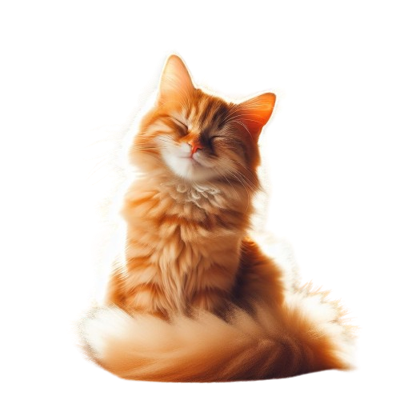
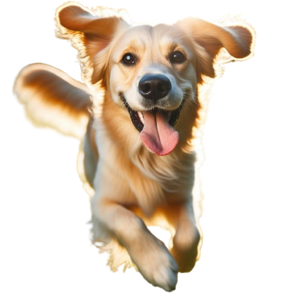

Bienvenidos a Patitas Felices
En Patitas Felices cuidamos a tus mascotas cuando sales de viaje o necesitas apoyo. Nos encargamos de alimentarlas, pasearlas, bañarlas y mantenerlas en un espacio seguro.
También ofrecemos el servicio de cuidado en el propio hogar de tus mascotas. De esta manera, se quedan en un entorno familiar y reciben la atención personalizada que merecen mientras tú no estás.
A través de nuestra página web, podrán contactarnos, conocer nuestros servicios y estrategias de cuidado, y tener acceso a información útil para brindar una atención integral a sus compañeros de cuatro patas.
¡Por un mundo donde las mascotas son felices!
Estrategias de cuidado
+ Planes de alimentación balanceada y acorde a las necesidades de cada mascota.
+ También ofrecemos el servicio de cuidado en el propio hogar de tus mascotas. De esta manera, se quedan en un entorno familiar y reciben la atención personalizada que merecen mientras tú no estás.
+ Programas de ejercicio y actividad física adaptados a la raza y edad.
+ Protocolos de higiene y baño personalizados.
+ Enriquecimiento ambiental y estimulación mental.
+ Seguimiento veterinario y atención a cualquier condición de salud.
+ Capacitación a los dueños sobre técnicas de entrenamiento y manejo.
Nuestra ubicación
Nuestro establecimiento está ubicado en el corazón de la ciudad.
Diferenciales
- Cuidado especializado en las instalaciones de la empresa o en el hogar del cliente.
- Socialización e introducción a diferentes entornos.
- Educación básica sobre cuidados y comportamientos.